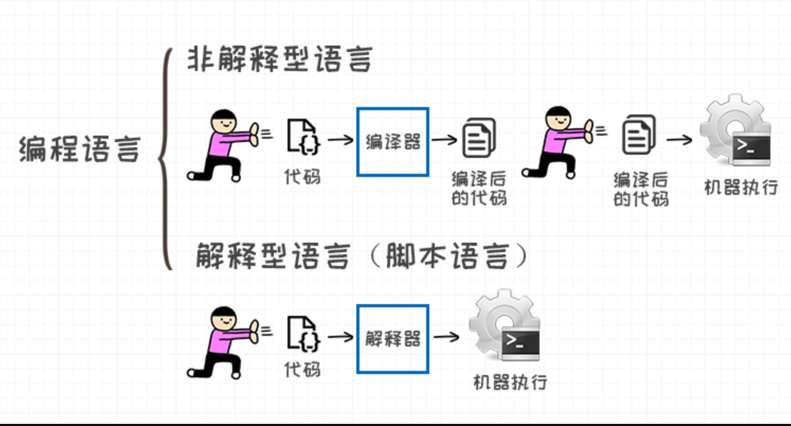
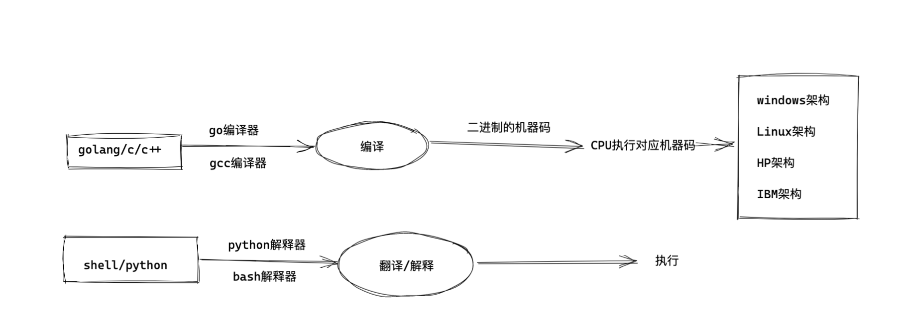
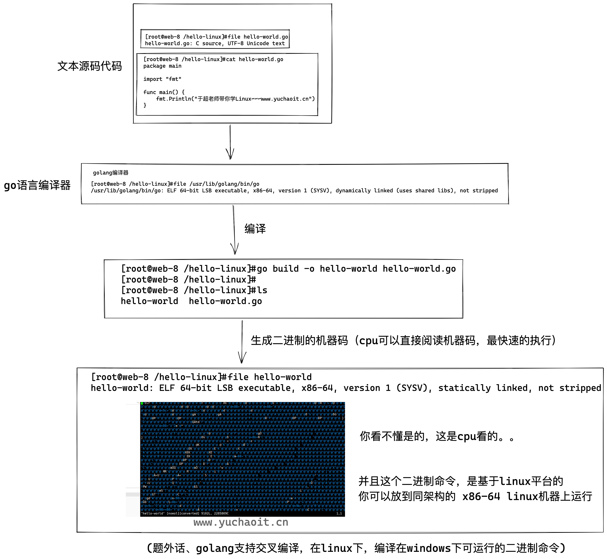
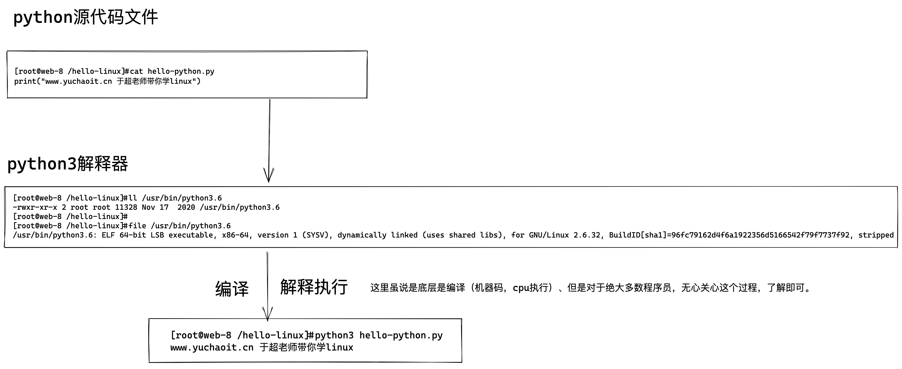
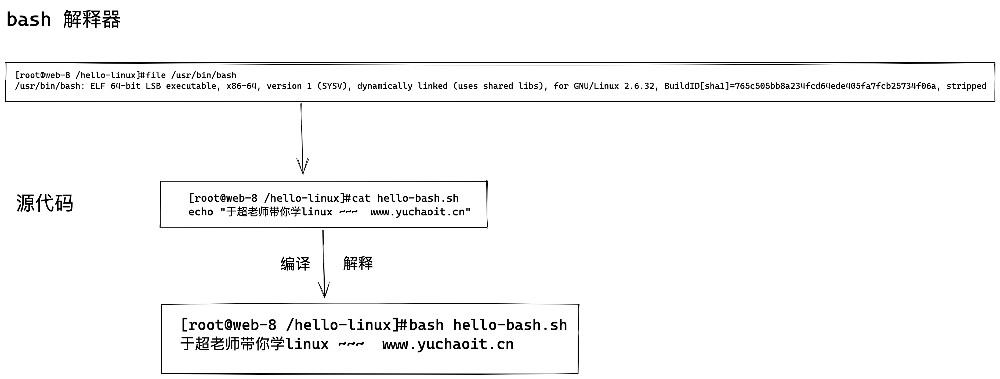
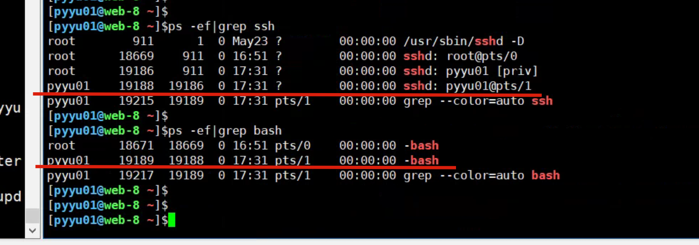
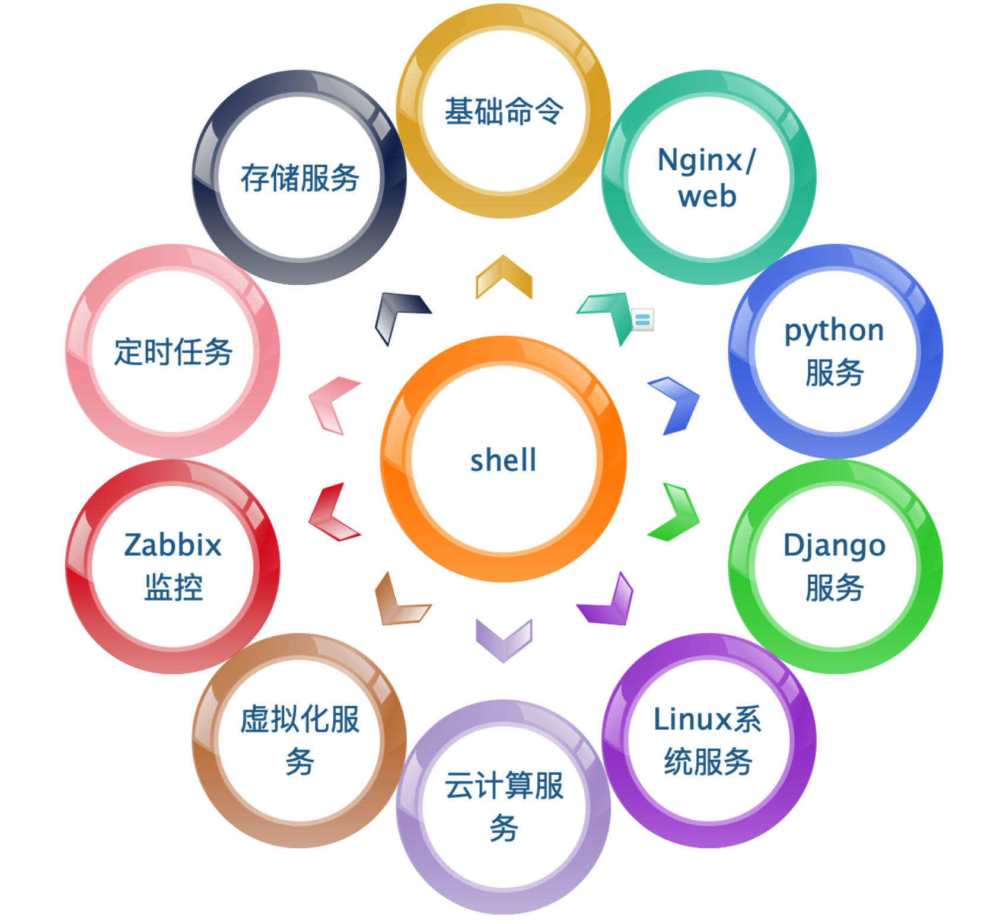
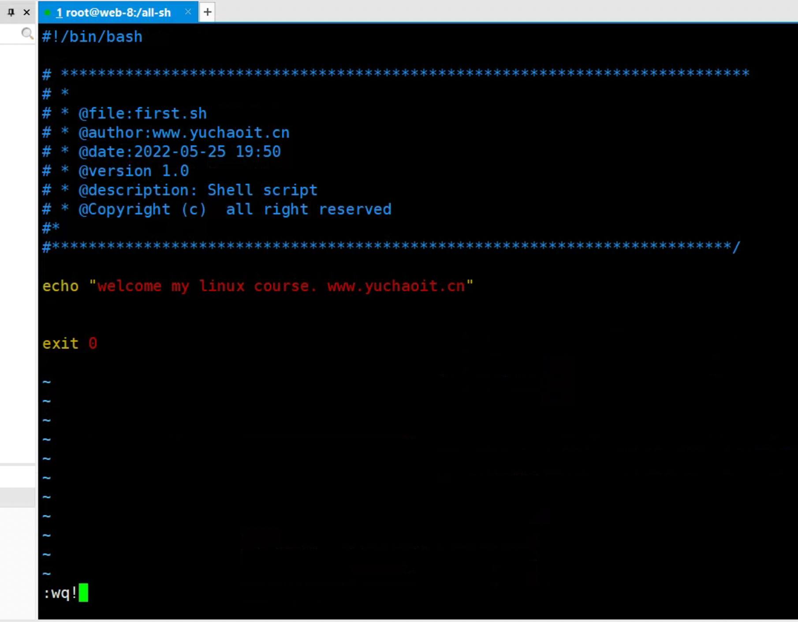
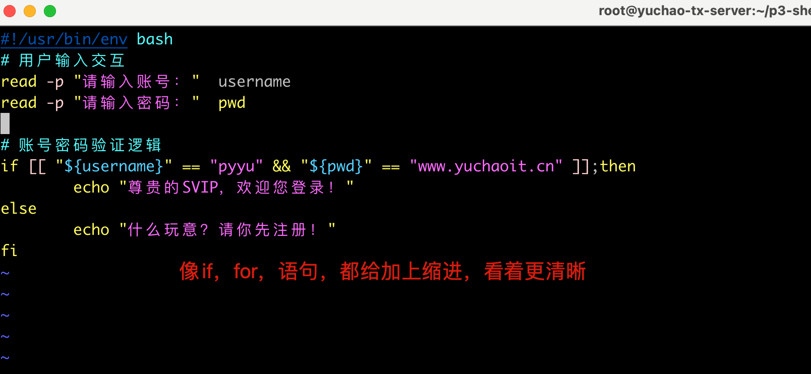

01-shell基础概述
第一章：什么是编程语言
1.0 编程的目的
计算机的发明，是为了用机器取代/解放人力，而编程的目的则是将人类的思想流程按照某种能够被计算机识别的表达方式传递给计算机，从而达到让计算机能够像人脑/电脑一样自动执行的效果。

编程语言(programming language)，是用来定义计算机程序的形式语言。
它是一种被标准化的交流技巧，用来向计算机发出指令。
一种计算机语言让程序员能够准确地定义计算机所需要使用的数据，并精确地定义在不同情况下所应当采取的行动。
小时候我们跟着父母学说话，通过长时间的熏陶，以及自我学习，我们在不知不觉中学会了说话，也能够理解他人说话的意思；就好比（以前没钱吃肯德基、现在没钱吃肯德基）这句话我们随着被社会毒打后，也理解其含义。
我们可以通过固定的语法格式，让他人为我们做事：
1. 张三，你去帮我打盆水，给本大爷洗洗脚。
张三可能会帮你去打水，也可能打一盆水，倒在你头上。。。
而计算机，我们也可以通过语言让它为我们做事，并且计算机会对你言听计从，完成你的任务，除非你的”语言“出了问题，让计算机理解错了（写了一堆bug）
因此这就是编程语言，每一种语言都有固定的语法格式，只有学习后才会使用。（英语，法语，汉语，不都是这样么）
1.0 什么是编程
编程就是你想让计算机自动帮你做一些事，节省你的时间，提高你的效率；
编程就是你将自己的想法，思路，以某个编程语言特有的语法风格，写出来，产出的就是一堆文本，就像是写了一堆作文。
注：代码文件，在没运行的时候，就是一些普通文本，只有通过特定语言的运行环境，才有了意义。
1.1 编译型语言
程序在执行之前需要一个专门的编译过程，把程序编译成为机器语言文件，运行时不需要重新翻译，直接使用编译的结果就行了。
程序执行效率高，依赖编译器，跨平台性差些。如C、C++。
演示go语言，进行代码编译，运行
1.安装golang编译器
[root@web-8 ~]#yum install epel-release golang -y
2.编写golang代码
[root@web-8 /hello-linux]#cat hello-world.go
package main
import "fmt"
func main() {
fmt.Println("于超老师带你学Linux~~~www.yuchaoit.cn")
}
[root@web-8 /hello-linux]#
3.编译代码，生成二进制命令
[root@web-8 /hello-linux]#go build hello-world.go
[root@web-8 /hello-linux]#ll
total 1732
-rwxr-xr-x 1 root root 1766214 May 25 16:57 hello-world
-rw-r--r-- 1 root root 110 May 25 16:57 hello-world.go
[root@web-8 /hello-linux]#file hello-world.go
hello-world.go: C source, UTF-8 Unicode text
[root@web-8 /hello-linux]#
[root@web-8 /hello-linux]#file hello-world
hello-world: ELF 64-bit LSB executable, x86-64, version 1 (SYSV), statically linked, not stripped
4. 运行代码
[root@web-8 /hello-linux]#./hello-world
于超老师带你学Linux~~~www.yuchaoit.cn
5. [可选] 加入到PATH变量中
[root@web-8 /hello-linux]#mv hello-world /usr/local/bin/
[root@web-8 /hello-linux]#
[root@web-8 /hello-linux]#
[root@web-8 /hello-linux]#hello-world
于超老师带你学Linux~~~www.yuchaoit.cn

1.2 图解编译代码

1.3 解释型语言
程序不需要编译，程序在运行时由解释器翻译成机器语言，每执行一次都要翻译一次。
因此效率比较低，这个效率是针对cpu而言的，你们普通的人类就别琢磨语言的性能了；
每一个语言都很强大。
比如Python/JavaScript/ Perl /ruby/Shell等都是解释型语言。
python脚本
# 安装python3解释器，编写代码，运行代码
[root@web-8 /hello-linux]#yum install python3 python3-devel -y
[root@web-8 /hello-linux]#cat hello-python.py
print("www.yuchaoit.cn 于超老师带你学linux")
解释运行
[root@web-8 /hello-linux]#python3 hello-python.py
www.yuchaoit.cn 于超老师带你学linux

bash脚本
[root@web-8 /hello-linux]#cat hello-bash.sh
echo "于超老师带你学linux ~~~ www.yuchaoit.cn"
[root@web-8 /hello-linux]#
[root@web-8 /hello-linux]#bash hello-bash.sh
于超老师带你学linux ~~~ www.yuchaoit.cn

1.4 编译、解释语言区别
编译型
- 二进制执行速度快
- 依赖平台架构
- 保护源代码
- 底层工具开发，操作系统，超大型应用，高并发型应用，都是编译型语言开发。
解释型
- 跨平台性能好
- 执行过程较慢（相对计算机而言，其实人类感受不到的。。）而且你块那几秒对你有啥用？
- 源码暴露在外，不安全
- 适合开发各种脚本，完成自动化工作
- 对速度要求不是太高的应用开发，如网站开发。
2.什么是shell
在Linux早起，还没有出现图形化，超哥和其他系统管理员都只能坐在电脑前，输入shell命令，查看控制台的文本输出。
在大多数Linux发行版里，例如centos，可以简单的用组合键来访问Linux控制台，也就是ctrl+F1~F7。
现在更多的使用xshell这样的控制终端，来连接管理我们的Linux机器。
以centos为例，默认的shell都是GNU bash shell，支持一些特性，例如
- man手册
- tab补全
- shell指令
GNU bash shell是在系统普通用户登陆时，作为普通程序运行，这个规则是/etc/passwd中指定的条目

[pyyu01@web-8 ~]$grep 'pyyu01' /etc/passwd
pyyu01:x:1003:1003::/home/pyyu01:/bin/bash
bash会在用户登录时候自动启动，如果是虚拟控制台终端登录，`命令行界面（英語：Command-Line Interface，缩写：CLI）提示符会自动出现，此时可以输入shell命令。
或者是通过图形化桌面登录Linux系统，你就需要启动GNOME这样的图形化终端仿真器来访问shell CLI。
2.1 shell作用

shell的作用是
- 解释执行用户输入的命令或程序等
- 用户输入一条命令，shell就解释一条
- 键盘输入命令，Linux给与响应的方式，称之为交互式

shell是一块包裹着系统核心的壳，处于操作系统的最外层，与用户直接对话，把用户的输入，解释给操作系统，然后处理操作系统的输出结果，输出到屏幕给与用户看到结果。

从我们登录Linux，输入账号密码到进入Linux交互式界面，所有的操作，都是交给shell解释并执行

我们想要获取计算机的数据，不可能每次都编写程序，编译后，再运行，再得到我们想要的，例如你想找到一个文件，可以先写一段C语言的代码，然后调用系统函数，通过gcc编译后，运行程序才能找到文件。。。
因此有大牛开发出了shell解释器，能够让我们方便的使用Linux，例如只要敲下ls -lh这样的字符串，shell解释器就会针对这句话翻译，解释成ls -l -h 然后执行，通过终端输出结果，无论是图形化或是命令行界面。
即使我们用的图形化，点点点的动作，区别也只是
- 命令行操作，shell解释执行后，输出结果到黑屏命令行界面
- 图形化操作，shell接受点击动作，输出图案数据
文本源代码 > 解释器 > 机器码
就好比如下的过程

2.2 shell和运维
shell脚本语言很适合处理纯文本类型数据，且Linux的哲学思想就是一切皆文件，如日志、配置文件、文本、网页文件，大多数都是纯文本类型的，因此shell可以方便的进行文本处理，好比强大的Linux三剑客（grep、sed、awk）

shell脚本就是把一堆命令和数据的集合，放在一起去执行；
shell脚本可以包括N个变量、循环、条件判断、函数等；
特定的格式 + 特定的语法 + 系统命令 + 文件数据 = 脚本
shell可以解决运维什么问题？
1.系统初始化脚本，如ssh配置、yum源、防火墙、ntp、基础软件安装，这一系列的步骤，写成脚本。
2. 定时备份数据，shell脚本 + crontab，每天夜里12点备份数据库。
3. nginx日志切割脚本。
4. 服务管理脚本，如nginx，mysql启停脚本。
5. 如代码上线脚本，将开发写好的代码，发布交给nginx。
6. 如自己开发一个跳板机脚本等。
简单说就是你的运维工作日常，可以用脚本完成自动化，提升效率，节省时间，多点时间和妹子聊天不香吗。
3.学习shell必备的工具
1. 熟练的vim
2. 熟练掌握linux命令
3. 熟练掌握正则，三剑客
4.学习shell的正确姿势
1. 知道自己要做什么，你准备给三台机器部署好nginx？
2. 拿到需要别立即去写shell脚本，先把命令写好，然后转化为脚本。
3. 先看懂老师的脚本，然后模仿，模仿久了，你就会自己写了。
总之
多思考
多练习
多总结
5.如何学好shell编程
如何学好shell脚本编程？
1.充分利用好课上时间，一定要主动思考，别等答案
2.充分理解知识点的语法，概念
3.先模仿老师的脚本开发，看懂语法
4.消化吸收老师的脚本思路后，自己模仿，改造
5.有思路后，按照自己的意愿，开发脚本
6. 送给小白的话
无论你以后学shell，还是python，学编程语言的套路都是一样的；
你学过英语吧？
1. 学单词-------shell的关键字
2. 学语法规则--------shell的语法要求
3. 写作文--------用shell写的脚本文件
到这你估计有点眉目了，但是为什么还有的人觉得学shell很难呢？
1.在于超老师带python、linux的学员时，总会发现有同学学不会，或者说代码写不出来，他也会问我，说超哥，，为什么上课我听着那么明白，自己写，感觉就呆住了，不知道咋开始啊。
2. 于超老师：“这不废话么？人家在那敲代码，一个需求用三种shell脚本思路实现，你天天搁那玩游戏，看电视剧，能学明白还有天理吗？”
3. 我就说你当初学英语，学汉语吧！你不会去琢磨，用哪个字，还是哪个说法，才能表达出你的意思。
你是随口就叭叭叭说了一堆优雅的中国话，对把？
为什么你代码写不出来，因为你没有烂熟于心。。。。你写代码，发现，关键字没记住，语法是啥来着？以及我到底怎么表达才是合适的！也就是你的代码逻辑如何写，你是不熟练的！
这就跟你去思考，我是用胳膊走路，还是腿走路，这不还是因为你路走少了么。
所以，狠下心来，你没有狠下心，早上5点到夜里3点的学代码，写代码，重点是写代码，不断的写，就像当年郭靖学降龙十八掌，洪七公让他对着树打两巴掌，这傻大个打了1000掌，为啥？说难听点，大家都是屌丝，你要没有郭靖这意志力，就别想着咸鱼翻身，做武林顶级高手了。
结尾，于超老师送给你，也送给自己一句话，学无止境，成功没有捷径，想爬得更高，没有上万行代码的洗礼，没有一千个日夜的拼命学习，想翻身？不存在的。
第二章：shell光速入门
1.shell书写规则
1. shell脚本要做到见名知意，正式的脚本，别瞎写a.sh b.sh 容易被打。。
2. 虽然脚本是文本类型，但是建议以.sh结尾。vim也能提供颜色支持。
3. 给脚本加上注释（英文最好，中文写在你的笔记里），包括了脚本的创建时间，作者，作用等信息；
4. 创建好可以管理你脚本的目录。
5. 创建统一管理脚本的目录，别乱放，回头找不到。
脚本示例
#!/bin/bash #! 这个符号在计算机中读作shebang，表示指定用什么解释器运行脚本
# Author: www.yuchaoit.cn 877348180@qq.com
# Create Time: 2022/05/25
# Script Description: this is my first shell script.
2.vim插件模板
打开vim配置文件
vim ~/.vimrc
代码
syntax on
set nocompatible
"set number
"filetype on
"set history=1000
"set background=dark
""set autoindent
"set smartindent
"set tabstop=4
"set shiftwidth=4
"set showmatch
"set guioptions-=T
"set ruler
"set nohls
"set incsearch
""set fileencodings=utf-8
if &term=="xterm"
set t_Co=8
set t_Sb=^[[4%dm
set t_Sf=^[[3%dm
endif
function AddFileInformation_php()
let infor = "<?php\n"
\." ***************************************************************************\n"
\." * \n"
\." * Copyright (c) 2014 \n"
\." * \n"
\." **************************************************************************/ \n"
\." \n"
\." \n"
\." \n"
\."/** \n"
\." * @file:".expand("%")." \n"
\." * @author your name(www.yuchaoit.cn) \n"
\." * @date ".strftime("%Y-%m-%d %H:%M")." \n"
\." * @version 1.0 \n"
\." **/ \n"
\." \n"
\." \n"
\." \n"
\." \n"
\." \n"
\." \n"
\."?>"
silent put! =infor
endfunction
autocmd BufNewFile *.php call AddFileInformation_php()
function AddFileInformation_sh()
let infor = "#!/bin/bash\n"
\."\n"
\."# ***************************************************************************\n"
\."# * \n"
\."# * @file:".expand("%")." \n"
\."# * @author:www.yuchaoit.cn \n"
\."# * @date:".strftime("%Y-%m-%d %H:%M")." \n"
\."# * @version 1.0 \n"
\."# * @description: Shell script \n"
\."# * @Copyright (c) all right reserved \n"
\."#* \n"
\."#**************************************************************************/ \n"
\."\n"
\."\n"
\."\n"
\."\n"
\."exit 0"
silent put! =infor
endfunction
autocmd BufNewFile *.sh call AddFileInformation_sh()
function AddFileInformation_py()
let infor = "#!/usr/bin/env python\n"
\."# -*- coding: utf-8 -*-\n"
\."# ************************************************************************ \n"
\."# * \n"
\."# * @file:".expand("%")." \n"
\."# * @author:www.yuchaoit.cn \n"
\."# * @date:".strftime("%Y-%m-%d %H:%M")." \n"
\."# * @version 1.0 \n"
\."# * @description: Python Script \n"
\."# * @Copyright (c) all right reserved \n"
\."# * \n"
\."#************************************************************************* \n"
\."\n"
\."import os,sys"
\."\n"
\."print u'''中文'''\n"
\."\n"
\."exit()"
silent put! =infor
endfunction
autocmd BufNewFile *.py call AddFileInformation_py()
这个插件，可以自动识别php、python、sh后缀的脚本，提供vim插件。
2.1 测试插件，编写shell

3.第一个shell脚本
[root@web-8 /all-sh]#cat first.sh
#!/bin/bash
# ***************************************************************************
# *
# * @file:first.sh
# * @author:www.yuchaoit.cn
# * @date:2022-05-25 19:50
# * @version 1.0
# * @description: Shell script
# * @Copyright (c) all right reserved
#*
#**************************************************************************/
echo "welcome my linux course. www.yuchaoit.cn"
exit 0
执行脚本
[root@web-8 /all-sh]#bash first.sh
welcome my linux course. www.yuchaoit.cn
4.执行shell方式
4.1 执行命令不同
[root@yuchao-tx-server ~/p3-shell]#echo 'echo www.yuchaoit.cn' > t1.sh
[root@yuchao-tx-server ~/p3-shell]#
[root@yuchao-tx-server ~/p3-shell]#
[root@yuchao-tx-server ~/p3-shell]#chmod u+x t1.sh
[root@yuchao-tx-server ~/p3-shell]#
[root@yuchao-tx-server ~/p3-shell]#./t1.sh
www.yuchaoit.cn
[root@yuchao-tx-server ~/p3-shell]#bash t1.sh
www.yuchaoit.cn
[root@yuchao-tx-server ~/p3-shell]#source t1.sh
www.yuchaoit.cn
4.2 首行是否指定解释器shebang
1.不指定 #!/usr/bin/env 解释器 ，导致./file 直接运行以bash去执行
[root@yuchao-tx-server ~/p3-shell]#cat p1.py
print("www.yuchaoit.cn")
[root@yuchao-tx-server ~/p3-shell]#
[root@yuchao-tx-server ~/p3-shell]#
[root@yuchao-tx-server ~/p3-shell]#chmod u+x p1.py
[root@yuchao-tx-server ~/p3-shell]#
[root@yuchao-tx-server ~/p3-shell]#./p1.py
./p1.py:行1: 未预期的符号 `"www.yuchaoit.cn"' 附近有语法错误
./p1.py:行1: `print("www.yuchaoit.cn")'
2. 不同的脚本必须指定解释器，才能正确运行
[root@yuchao-tx-server ~/p3-shell]#cat p1.py
#!/usr/bin/env python3
print("www.yuchaoit.cn")
[root@yuchao-tx-server ~/p3-shell]#
[root@yuchao-tx-server ~/p3-shell]#
[root@yuchao-tx-server ~/p3-shell]#./p1.py
www.yuchaoit.cn
4.3 强制用解释器去执行脚本
[root@yuchao-tx-server ~/p3-shell]#python3 p1.py
www.yuchaoit.cn
[root@yuchao-tx-server ~/p3-shell]#bash t1.sh
www.yuchaoit.cn
4.4 shell和python和运维
Shell
shell脚本的优势在于，最贴切linux底层，直接使用linux原生命令，效率很高，适合处理偏向操作系统底层的脚本。
对于一些常见的系统脚本，用shell去开发会更简单，更快速，例如一键部署nginx集群，系统内核参数优化，服务启动脚本，日志分析解析三剑客的提取脚本等。
虽然其他语言，如python也能实现这个效果，但是考虑到学习成本，开发效率，以及如果通过python管理操作系统的模块去写脚本，这个python语言对操作系统的效率，远不如linux命令来的强大。
因此对于基本的系统维护需求，用shell脚本会更符合易用、快速、高效的原则。
python
python是最近几年运维自动化非常流行的语言，随着运维人员开发能力的提升，以及运维对编程的需求加大，像知乎网、豆瓣网、国外的INS网都是python开发的，虽说后来有更新。
因此python很适合web开发，实现网站的后端功能，这个是shell完成不了的，shell仅仅是维护linux系统的脚本语言。
python除了可以开发网站的web服务，以及运维的开源工具，如ansible，saltstack，openstack虚拟化平台，都是python开发而来。
因此运维的第二语言以python为主，适合开发更复杂，更强大的运维软件，运维系统，而不是简单的运维脚本了。
5. 调试shell执行
例如给你准备如下一个测试登录的脚本。
通过set -x 和 set +x 设定一个范围，会显示对应的代码，以及执行结果。
[root@yuchao-tx-server ~/p3-shell]#cat login.sh
#!/usr/bin/env bash
# set -x 用于在运行结果之前，先输出对应的命令，用于精准调试shell脚本逻辑
set -x
# 用户输入交互
read -p "请输入账号：" username
read -p "请输入密码：" pwd
# set +x 表示关闭这个x调试功能
set +x
# 账号密码验证逻辑
if [[ "${username}" == "pyyu" && "${pwd}" == "www.yuchaoit.cn" ]];then
echo "尊贵的SVIP，欢迎您登录！"
else
echo "什么玩意？请你先注册！"
fi
# 执行脚本
[root@yuchao-tx-server ~/p3-shell]#bash login.sh
+ read -p 请输入账号： username
请输入账号：pyyu
+ read -p 请输入密码： pwd
请输入密码：www.yuchaoit.cn
+ set +x
尊贵的SVIP，欢迎您登录！
# 错误登录
[root@yuchao-tx-server ~/p3-shell]#bash login.sh
+ read -p 请输入账号： username
请输入账号：123
+ read -p 请输入密码： pwd
请输入密码：123
+ set +x
什么玩意？请你先注册！
加上脚本的详细执行过程，通过 bash -vx参数显示详细过程。
[root@yuchao-tx-server ~/p3-shell]#bash -vx login.sh
#!/usr/bin/env bash
# set -x 用于在运行结果之前，先输出对应的命令，用于精准调试shell脚本逻辑
set -x
+ set -x
# 用户输入交互
read -p "请输入账号：" username
+ read -p 请输入账号： username
请输入账号：pyyu
read -p "请输入密码：" pwd
+ read -p 请输入密码： pwd
请输入密码：www.yuchaoit.cn
# set +x 表示关闭这个x调试功能
set +x
+ set +x
# 账号密码验证逻辑
if [[ "${username}" == "pyyu" && "${pwd}" == "www.yuchaoit.cn" ]];then
echo "尊贵的SVIP，欢迎您登录！"
else
echo "什么玩意？请你先注册！"
fi
尊贵的SVIP，欢迎您登录！
去掉set -x 和set +x ，这个作为了解，一般不用。
并且模拟代码写错了，例如忘记了结尾的fi。
[root@yuchao-tx-server ~/p3-shell]#cat login.sh
#!/usr/bin/env bash
# 用户输入交互
read -p "请输入账号：" username
read -p "请输入密码：" pwd
# 账号密码验证逻辑
if [[ "${username}" == "pyyu" && "${pwd}" == "www.yuchaoit.cn" ]];then
echo "尊贵的SVIP，欢迎您登录！"
else
echo "什么玩意？请你先注册！"
[root@yuchao-tx-server ~/p3-shell]#
执行，错误结果如下
[root@yuchao-tx-server ~/p3-shell]#bash login.sh
请输入账号：qweqwe
请输入密码：qwe
login.sh:行11: 语法错误: 未预期的文件结尾
显示详细过程
[root@yuchao-tx-server ~/p3-shell]#bash -vx login.sh
#!/usr/bin/env bash
# 用户输入交互
read -p "请输入账号：" username
+ read -p 请输入账号： username
请输入账号：qwe
read -p "请输入密码：" pwd
+ read -p 请输入密码： pwd
请输入密码：qwe
# 账号密码验证逻辑
if [[ "${username}" == "pyyu" && "${pwd}" == "www.yuchaoit.cn" ]];then
echo "尊贵的SVIP，欢迎您登录！"
else
echo "什么玩意？请你先注册！"
login.sh:行11: 语法错误: 未预期的文件结尾
修复Bug，结尾加上fi，再执行，且显示代码详细加载的过程，用于调试代码。
[root@yuchao-tx-server ~/p3-shell]#bash -vx login.sh
#!/usr/bin/env bash
# 用户输入交互
read -p "请输入账号：" username
+ read -p 请输入账号： username
请输入账号：pyyu
read -p "请输入密码：" pwd
+ read -p 请输入密码： pwd
请输入密码：www.yuchaoit.cn
# 账号密码验证逻辑
if [[ "${username}" == "pyyu" && "${pwd}" == "www.yuchaoit.cn" ]];then
echo "尊贵的SVIP，欢迎您登录！"
else
echo "什么玩意？请你先注册！"
fi
+ [[ pyyu == \p\y\y\u ]]
+ [[ www.yuchaoit.cn == \w\w\w\.\y\u\c\h\a\o\i\t\.\c\n ]]
+ echo 尊贵的SVIP，欢迎您登录！
尊贵的SVIP，欢迎您登录！
6. 代码编写细节语法（重点）
1.成对儿出现的符号，一次性写好，别遗漏。
如下符号，一次性，首尾都给写好。
例如大括号{}
中括号[]
小括号()
单引号' '
双引号" "
反引号` `
2.shell语法要求括号内必须有空格。
中括号[ ]两端需要留有空格，不然会报错
书写时即可留出空格然后书写内容。
如果不知道大括号{}，中括号[]，小括号()，到底哪种括号需要两端留空格，可以在书写这些括号的时候两端都保留空格来进行书写，这样可以有效避免因空格导致的各种错误。
例如上述代码案例的 中括号。
[[ 语法要求前后都预留一个空格 ]]
if [[ "${username}" == "pyyu" && "${pwd}" == "www.yuchaoit.cn" ]];then
- 流程控制语句，习惯性，先写好流程，再添加内容。
例1：if语句格式一次书写完成
if 条件语句
then
条件成立后执行的代码
fi
例2：for循环格式一次书写完成
for条件内容
do
条件成立后执行的代码
done
提示：while、until、case等语句也是一样
意思就是告诉大家，可以先吧语法框架写好，防止自己忘了，导致低级的语法错误。
4.虽然shell无要求，但是建议你写缩进，清晰代码的层次关系。

总结
- 编程目的
- 编译型语言、解释性语言
- 解释性语言的python和shell
- 什么是shell
- shell和运维的联系
- 学会shell的正确姿势
- shell登录脚本光速入门。
- 执行shell脚本的不同方式，细节。
- 调试shell的技巧。
- 写shell脚本的细节。